The project is dedicated to actualising the figure of the Ukrainian writer Taras Shevchenko, who has a strong influence on contemporary Ukrainian society and is the personification of a fighter for freedom, independence, justice, as well as for the national and spiritual revival of Ukraine. As part of the work, a design was developed for printing on T-shirts with excerpts from Shevchenko's poems, which are close to every Ukrainian. In addition to developing the design for the T-shirts, other items for disseminating information were also selected, such as stickers, shoppers, badges and cards.
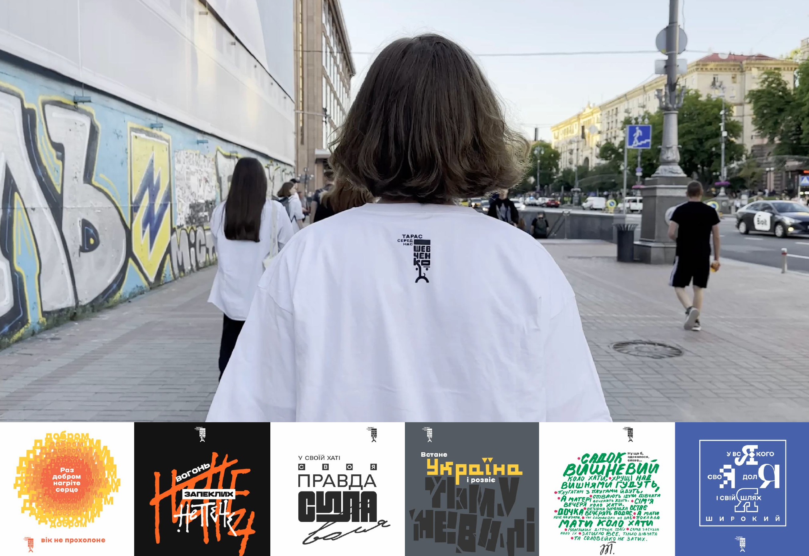
The logo of the campaign refers to the "iconic" portrait of Taras Shevchenko wearing a striped hat formed from the letters of the poet's surname. His face is made in simple shapes for better perception by the viewer. The letters of the surname form the cap and part of the facial features. The iconic shape fits into a vertical rectangle. The logo took part in the exhibition of logos for the Shevchenko 210 event at the National Academy of Arts and Sciences of Ukraine.
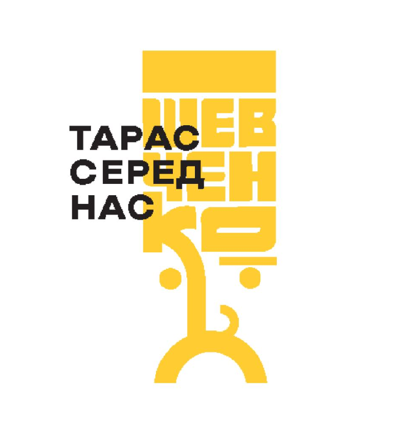
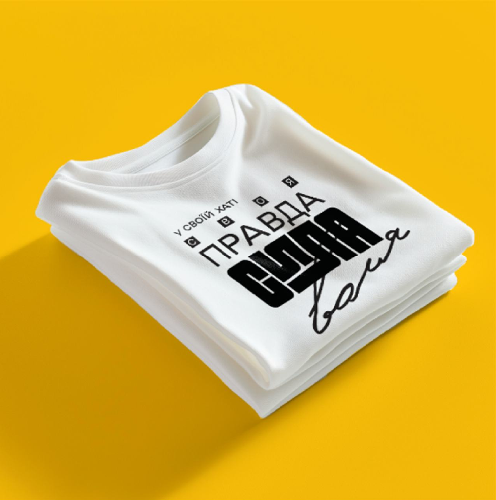
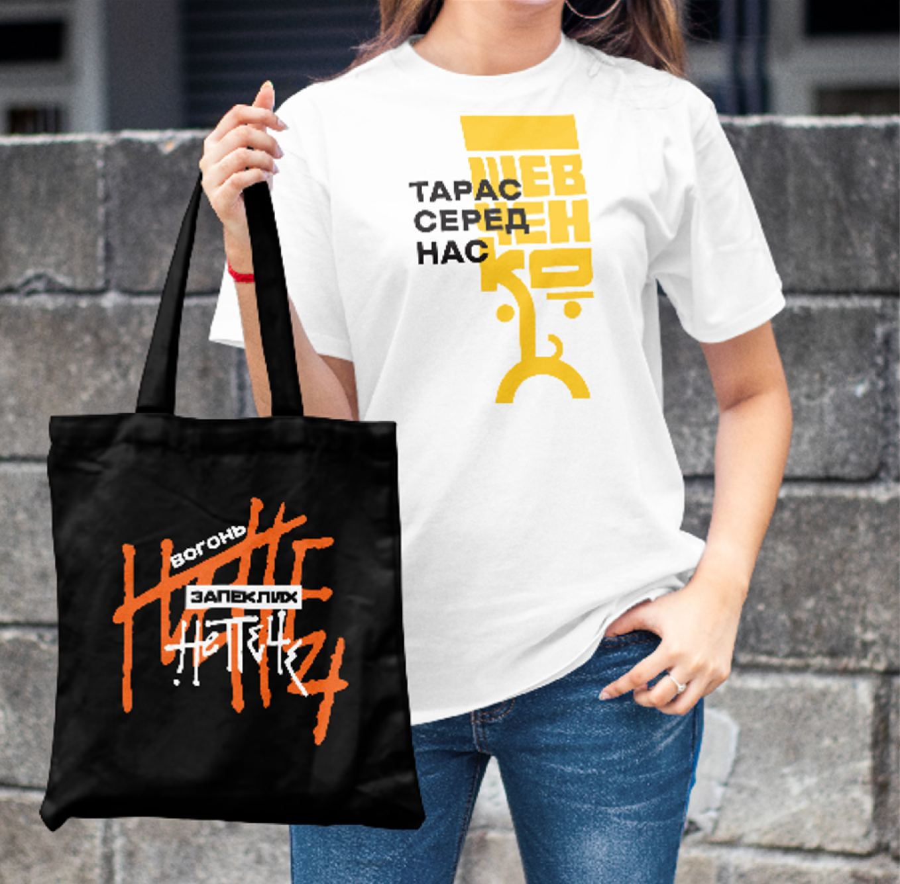
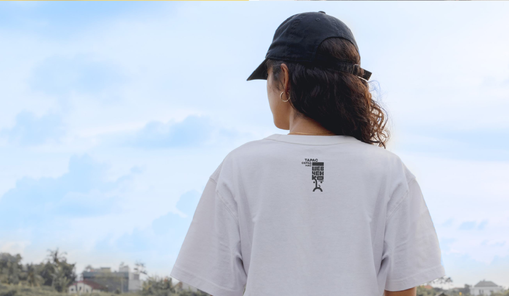
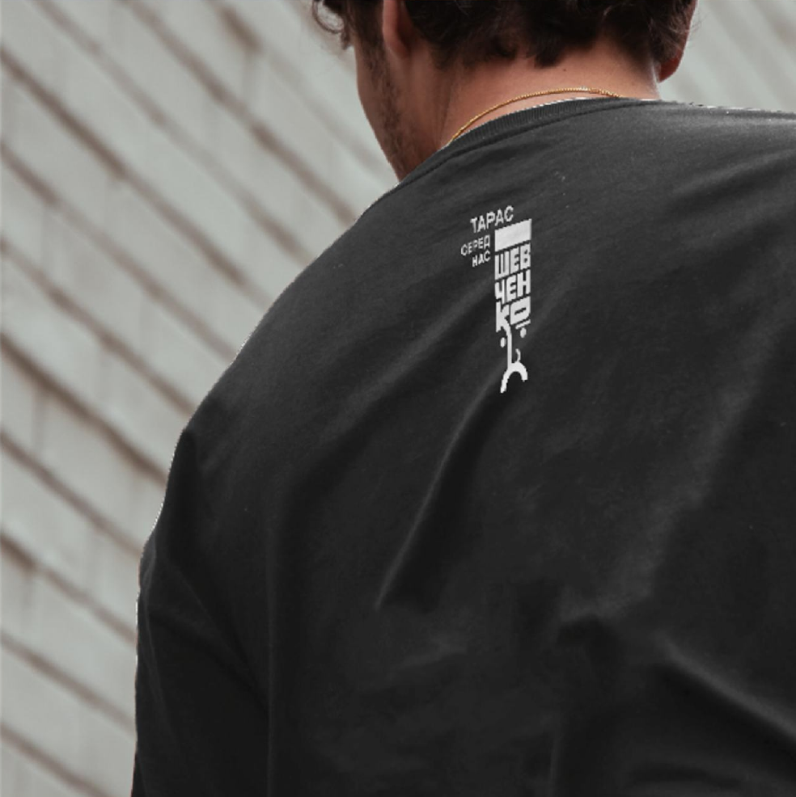
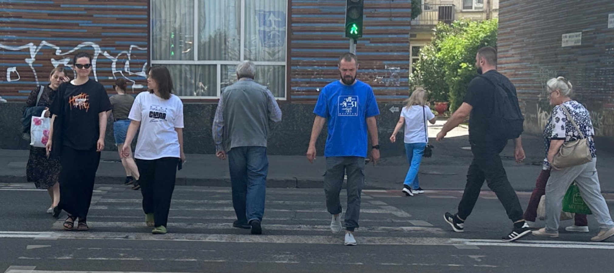
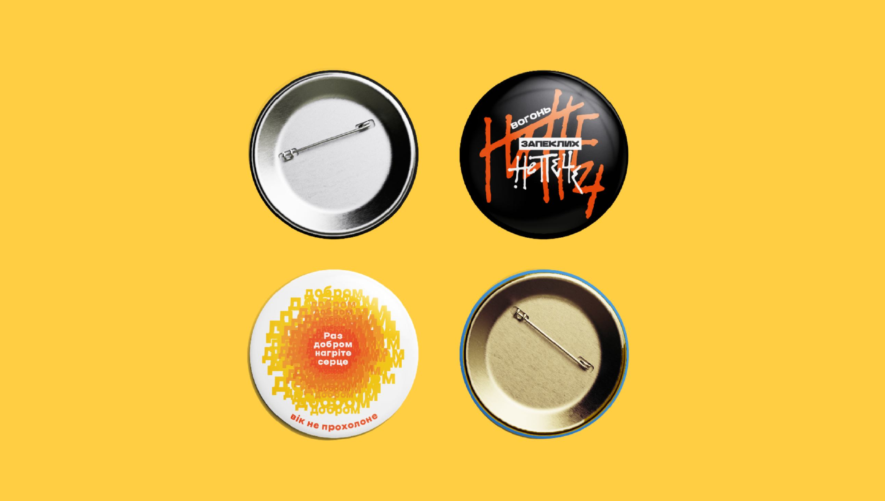
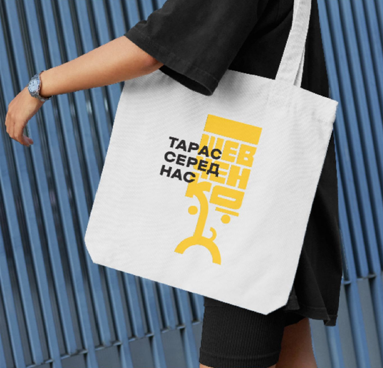
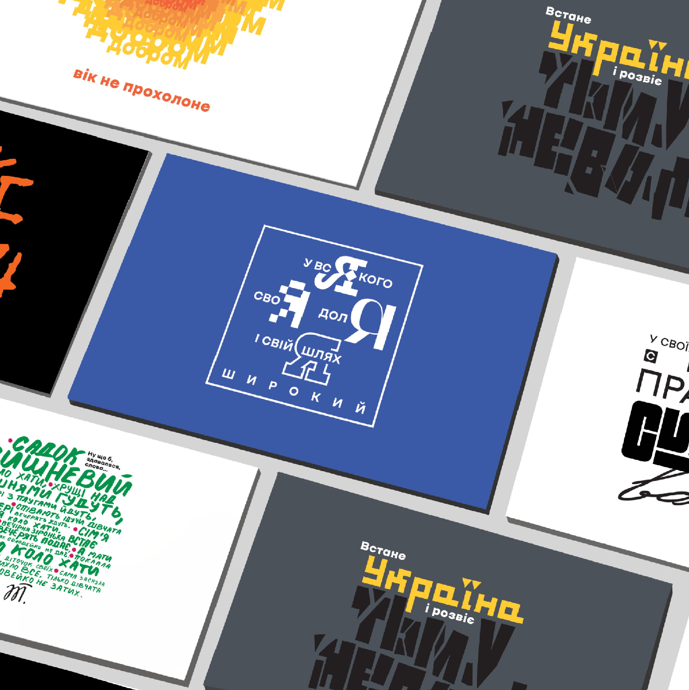
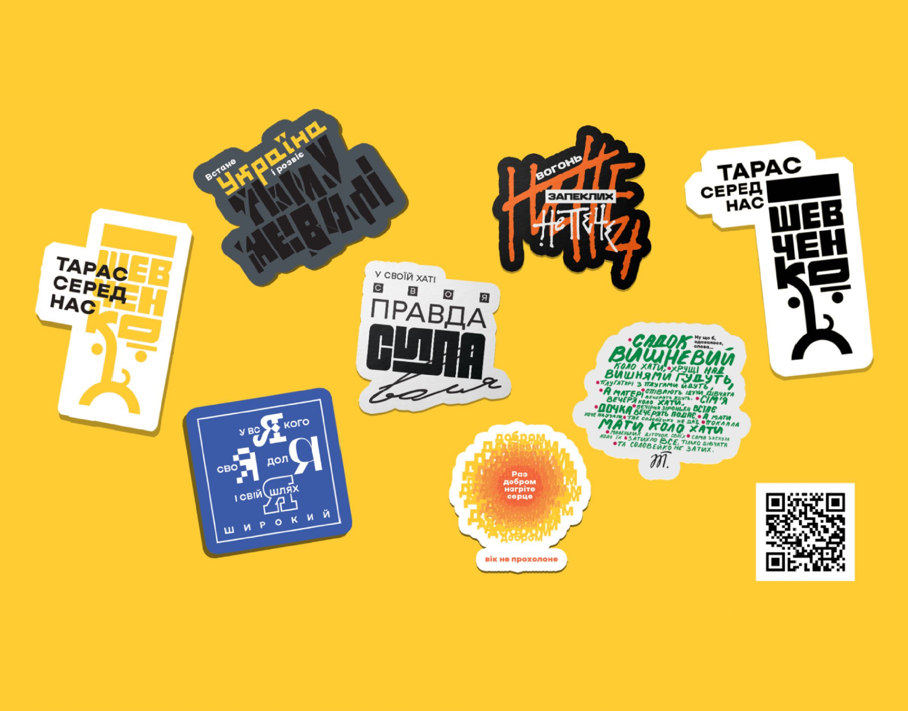
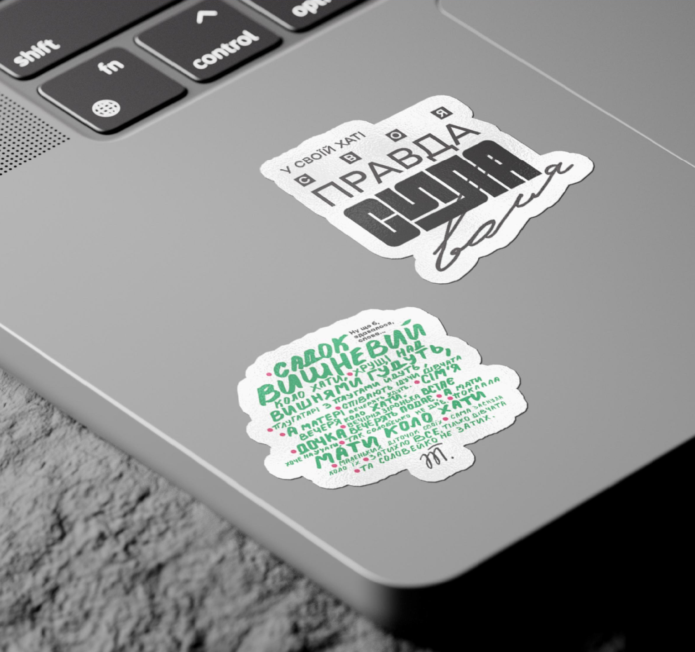